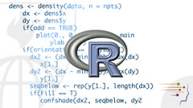

JHU-Coursera Data Science Specialization
You can read more about this specialization here.
Here you can find R material that includes quizzes, assignments, exercises and my own tricks and functions that I created for courses contained in the specialization. This is available for educational purposes.
Course 1 • The Data Scientist’s Toolbox
This course teaches you how to set up a Github account and sync files. No other quizzes or assignments than those related to configure and use Github
Course 2 • R Programming

- Week 1: Overview of R, R data types and objects, reading and writing data.
- Week 2: Control structures, functions, scoping rules, dates and times.
- Week 3: Loop functions, debugging tools.
- Week 4: Simulation, code profiling.
Course 3 • Getting and Cleaning Data

- Obtain data from a variety of sources.
- Apply the basic tools for data cleaning and manipulation.
Course 4 • Exploratory Data Analysis
- Visual representations of data using the base, lattice, and ggplot2 plotting systems in R.
- Exploratory summaries of data.
- Create visualizations of multidimensional data using exploratory multivariate statistical techniques.
Course 5 • Reproducible Research
- Use of R markdown.
- Integrate R code into a literate statistical program.
- Organize a data analysis so that it is reproducible and accessible to others.
Course materials:
Course 6 • Statistical Inference
- Fundamentals of statistical inference.
- Assumptions and modes of performing statistical inference.
Course materials:
Course 7 • Regression Models
- How to fit regression models.
- How to interpret coefficients.
- How to investigate residuals and variability.
- Special cases of regression models including use of dummy variables and multivariable adjustment.
- Extensions to generalized linear models, especially considering Poisson and logistic regression.
Course materials:
- Quiz 1
- Quiz 2
- Quiz 3
- Quiz 4
- Course project
- Another course project (Yolanda Xu made a different approach and she gently shared this with me for peer reviewing)
Course 8 • Practical Machine Learning
- Components of a machine learning algorithm.
- Apply multiple basic machine learning tools.
- Apply machine learning tools to build and evaluate predictors on real data.
Course materials:
Course 9 • Developing Data Products

- How communicate using statistics and statistical products.
- Emphasis to communicating uncertainty in statistical results.
- How to create simple Shiny web applications and R packages .
Course materials:
Course 10 • Data Science Capstone

It's the final project to obtain the certification and code won't be uploaded to avoid plagiarism. The Web Application (Shiny) it's working for demo purposes.